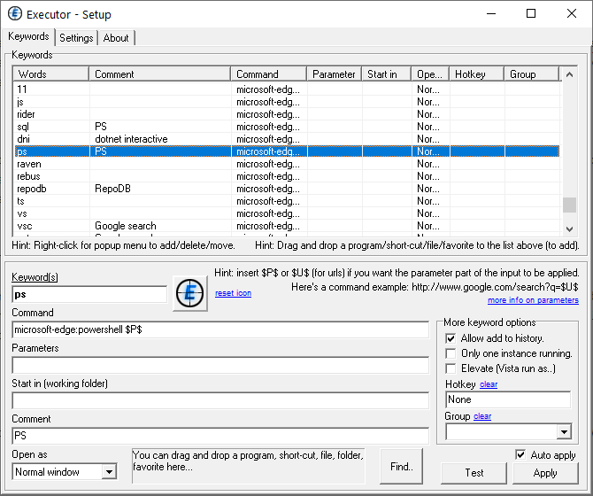
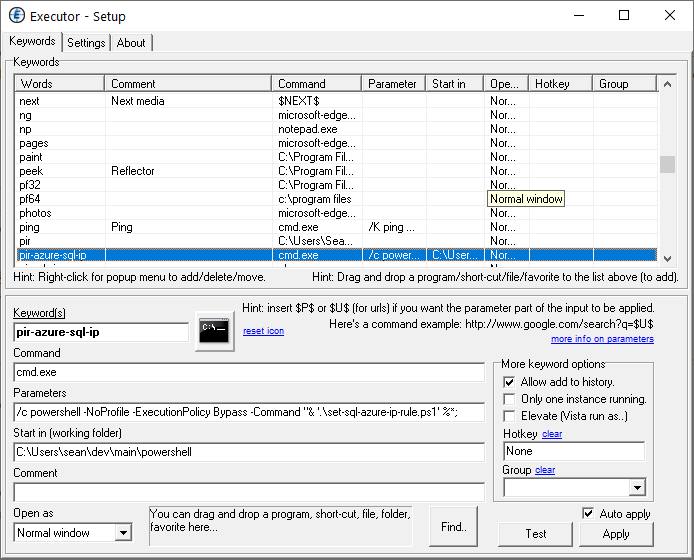
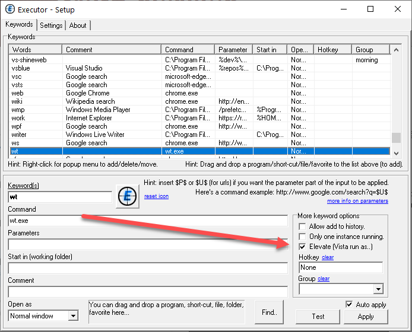

It's always good when Scott Hanselman publishes a new Ultimate Tools List. I love reading about new, cool utilities that folks use to help them work, and I'm using a lot of those already. I'd like to shout out to a utility that I've been using for years and which, for me, fits into Scott's "life and work-changing utilities" category.
That utility is Executor from Martin Bresson and I completely rely on it in all of my daily development work.
As a "launcher" app, Executor presents itself on a hot-key combination (I use Alt + Z for mine) and shows a little box that you can type into, command-line style. Anyone who has used another launcher, such as Windows PowerToys Run or Ueli that Scott mentions will be immediately familiar.
Here's how Executor describes itself:
Executor is a multi-purpose launcher sporting many optional customizable features and advanced setup. The program originated as I was sick of spending too much time searching for programs through my ever-growing windows start-menu, and eye-balling desktop trying to mouse locate whatever I wanted to launch. Also, I missed a tool that could ease and optimize my daily workflow. There was of course already programs like this available, but each had it's annoyance or missing features or too(!) geeky.
Easy to customise #
The capability that sets Executor apart from any of the other launchers that I have seen and tried over the years is that you can very easily customise it to add the specific functionality that you need in your daily workflow. This capability comes from a bunch of parameters that are built into Executor. The documentation for these are here:
http://www.1space.dk/executor/help.html#param
Let's take a look at some of the things that I use these for.
Focused searching #
As a developer, I'm constantly looking for information on several topics. Executor has search built-in and you can just type things like google latest executor or wiki nirvana. Typing that and hitting Enter opens a browser displaying the search results for the term entered.
The first stage into customising for me was realising that typing google was too many keystrokes for me. I'm lazy, so I customised my web searches so that they ran when I typed just ? plus my search term.
That was great, but then when I'm working with a particular tech, such as writing a PowerShell script, and I found that I was constantly typing things like ? powershell copy file or ? powershell copy file. So, for technologies that I am learning or work with, so I customised Executor to make these searches more specific. Instead of ? powershell copy file I replaced the ? powershell with ps so that I now only have to type:
ps copy file
I have a whole bunch of these set up for things like PowerShell, Bootstrap 4, Bootstrap 3, F#, C#, etc. It's particularly useful when you want to be more ?, such as searches related to "ASP.Net Core MVC" or "Microsoft SQL Server TSQL".
It's very easy to set these up using the Keywords section in Executor's settings, as shown below.

I am just calling my browser and passing parameters using Executor's $P$ parameter to capture what's typed after ps (but now I write this, I realise that I should probably be using $U$ instead to URL encode that value!). You can see that here:
microsoft-edge:powershell $P$
Running scripts #
I also need to run scripts from time to time. One example is when my public IP changes and I want to run a script to set up a SQL Azure firewall rule to allow access from my new IP address. To do that, I just type pir-azure-sql-ip and watch the script set that up for me. Here's how that is set up (no Executor parameters required for this one!):

Under the hood, Executor stores your setup in an Ini file so you can keep all your customisations safe by simply backing up the file %appdata%\Roaming\Executor\executor.ini. You can see below the section that runs my SQL Azure script:
[W122]
keywords=pir-azure-sql-ip
command=cmd.exe
path=C:\Users\sean\dev\main\powershell
param=/c powershell -NoProfile -ExecutionPolicy Bypass -Command "& '.\set-sql-azure-ip-rule.ps1' %*;
Opening specific GitHub repositories #
To open a particular GitHub repository I just type gh repo-name and my browser opens up on https://github.com/seankearon/repo-name. That's easy to achieve using the $U$ parameter:
microsoft-edge:https://www.github.com/seankearon/$U$
Clipboard access and elevation #
I sometimes need to look up user GUID from a log file in one of my app's admin site. To do that, I copy the GUID to the clipboard and type admin-search into Executor to open the admin site's search URL. I set this up using the $C$ parameter to access the contents of the Clipboard like so.
[W142]
keywords=admin-search
command=microsoft-edge:https://myadminsite.azurewebsites.net/$C$
I also like to start my terminal elevated, just to avoid small frustrations like choco telling me that it can't upgrade something. To do that, I just added a command for wt.exe and set it to start elevated. Simples!

These are some of the reasons why I definitely wouldn't want to work with without Executor on my machine.